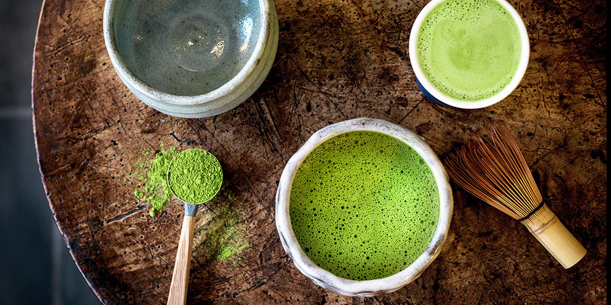
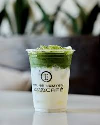
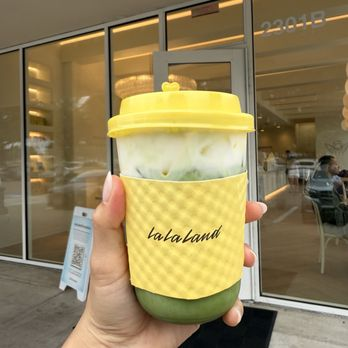
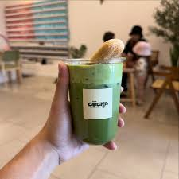

Matcha originated in China, but it was refined in Japan. In the 16th century matcha was used to stay awake during long periods of meditation. As time went on matcha was a luxury item, and now it is a popularized drink that is loved by many people.
| Trung Nguyen E-Coffee | Lalaland Kind Cafe | Cocha |  |
 |
 |
|---|
I personally love matcha lattes, my favorite places in order are Cocha, Trung Nguyen, Fresso, & Lalaland! The clouds that taste the best are coconut and banana, and the best base is oatmilk and horchata.